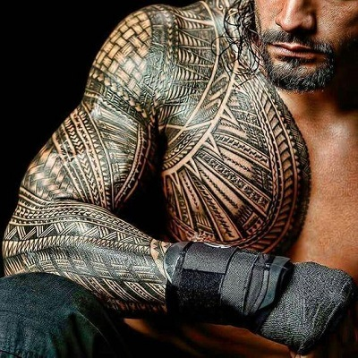
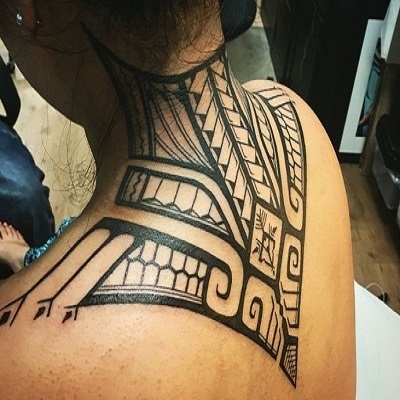
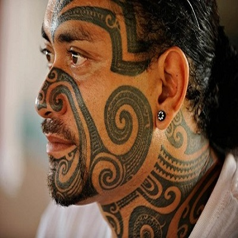
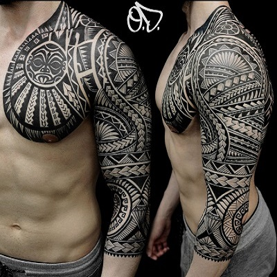
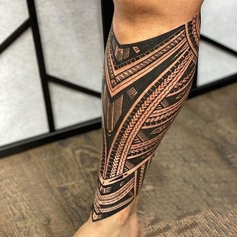
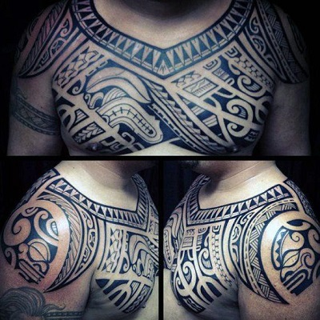
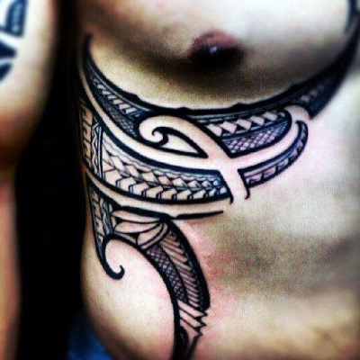
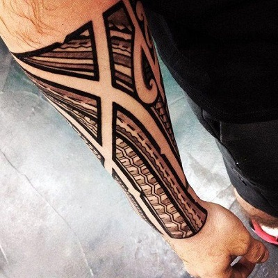

Tetoválások
A tetoválás során az emberi vagy állati bőr pigmentálását változtatják meg a bőrrétegekbe vitt színezőanyagok segítségével a legkülönbözőbb célokkal, mint például a test díszítése, a törzsi hovatartozás jelzése, esetleg az azonosítás, mint például a kutyák fülébe tetovált szám esetén.
Célok és jelentések
Törzsi tetoválások jelentései
A tetoválásnak – esztétikai funkcióján kívül – társadalmi jelentősége is van. A polinéziaiaknál a tetoválás mintája, valamint a tetovált díszítésekkel borított bőrfelület nagysága társadalmi állás, rang szerint változik; különböző életkorokban más és más mintákat visznek a bőr más és más részére, míg – az előkelőknél – a test egész felületét díszes tetoválás nem borítja. Vannak meghatározott törzsi, nemzetségi minták, jelek is; Afrikában például egyes törzseknél az arcon elhelyezett tetoválási mintákból meg lehet állapítani egy-egy egyén törzsi hovatartozását. Új-Zélandon a tetoválás annyira hozzátartozik az egyéni jellegzetességekhez, hogy a halottak emlékére faragott szobrokon nem az arcvonások, vagy a testalkat hű visszaadására törekednek, hanem a szoborra vésett bonyolult és a tetoválási mintákkal egyező motívumok mutatják meg, kit ábrázol a faragvány.
Szamoai
 Maori
  Hawaii
  A modern tetoválás és az önmegvalósítás
Sokak számára a tetoválás nem csupán divat, egyre többen vannak akik azért tetováltatják magukat, mert így akarják kifejezni, megvalósítani önmagukat. Minden egyes tetoválás egyfajta üzenet a külvilágnak, de a viselője számára is fontos mondanivalót hordoz. Van aki egy tetoválás formájában örökíti meg az élete egy szakaszának végét.